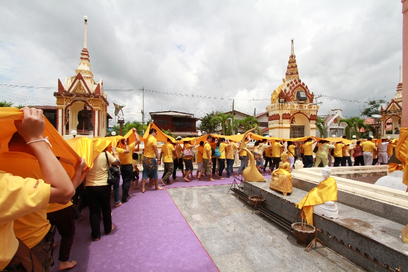

ประเพณี

🛕 ประเพณีทางศาสนา งานนมัสการองค์พระปฐมเจดีย์ จัดขึ้นทุกปีช่วงเดือนพฤศจิกายน มีการเวียนเทียน มหรสพ และร้านค้าพื้นบ้าน เป็นงานใหญ่ของจังหวัด ประเพณีแห่เทียนพรรษา จัดในช่วงเข้าพรรษา แสดงถึงความศรัทธาในพระพุทธศาสนา